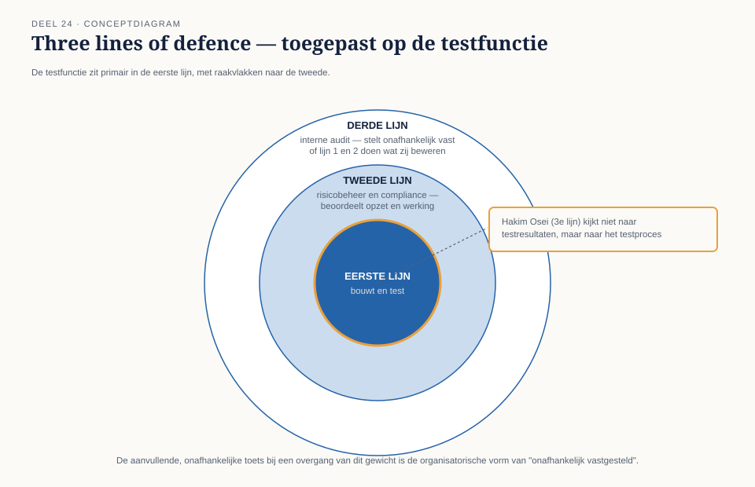

Deel 24 — Testen onder toezicht
Slidedeck · Ductus-cursus Testen en Kwaliteitsborging · niveau 3 · deel 24 van 30 · 17 slides
Slide 1 — titleSlide
Testen onder toezicht Deel 24 · Niveau 3 Expert
Slide 2 — quoteSlide
"Kunt u aantonen dat dit klopt, of neemt u aan dat dit klopt?"
— DNB, eerste toezichtssessie
Slide 3 — statementSlide
Onder toezicht is gelijk hebben niet voldoende.
Je moet laten zien waaróm — navolgbaar voor een ander.
Slide 4 — opdrachtSlide
Opdracht 24.1 — Stuurgroep of toezichthouder?
Vier vragen, twee soorten publiek. 10 minuten, individueel.
Slide 5 — sectionSlide
1. Bewijslast en dossiervorming
Slide 6 — figureSlide

Slide 7 — statementSlide
Een toezichtsdossier is het besluitvormend rapport
plus het bewijs erachter — navolgbaar voor een derde.
Slide 8 — opdrachtSlide
Opdracht 24.2 — Bouw een testdossier
Voor de terugwerkende-krachtregel. Wat ontbreekt er meestal, en waarom?
25 minuten, groepjes van drie.
Slide 9 — sectionSlide
2. Three lines of defence
Slide 10 — figureSlide

Slide 11 — opdrachtSlide
Opdracht 24.3 — Plaats de testfunctie
Drie activiteiten, welke lijn? 15 minuten, tweetallen.
Slide 12 — statementSlide
Hakim Osei kijkt niet naar de testresultaten.
Hij kijkt of het testprocés betrouwbaar is.
Slide 13 — sectionSlide
3. Accountant, certificerend actuaris, onafhankelijkheid
Slide 14 — statementSlide
Grondig testwerk is noodzakelijk —
nooit voldoende — voor een actuarieel of financieel oordeel.
Slide 15 — bulletsSlide
"Onafhankelijk vastgesteld" — drie eisen
- Geen belang bij de uitkomst
- Geen voorkennis van de oorspronkelijke methode
- Een eigen, gedocumenteerd pad naar de conclusie
Slide 16 — opdrachtSlide
Opdracht 24.4 — Onafhankelijk, of alleen "een ander"?
Drie situaties. Voldoet elk aan de technische eis?
20 minuten, groepjes van drie.
Slide 17 — statementSlide
Volgende keer: het onomkeerbare testobject
Wat als er geen tweede waarheid bestaat om onafhankelijk tegen te verifiëren?